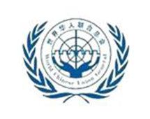

世界华人联合总会
- 
- 世界华人联合总会LOGO
世界华人联合总会简介
世界华人联合总会、全球中国人联合总会的宗旨是：联合全世界华人中有识之贤能，致力于中华民族大联合、大团结，致力于祖国统一、民主富强，加强海内外华人的交流，努力发展经济、发展文化、发展社会民主，为中华民族的伟大复兴及世界和平而奋斗！
世界华人联合总会由原马来西亚国会上议院主席丹斯里·曾永森先生阁下、原中国政协常委、中国侨联副主席庄世平先生、国际著名侨领、现任美国国际合作委员会主席陈香梅女士、现任全美华裔共和党联盟主席苏丽凰女士等担任永远名誉主席。还有韩国前总理、现任韩国新农村运动中央会会长李寿成先生、美国常驻联合国经社理事会大使徐西泉先生等众多国内外知名人士、著名侨领担任世华会的顾问。